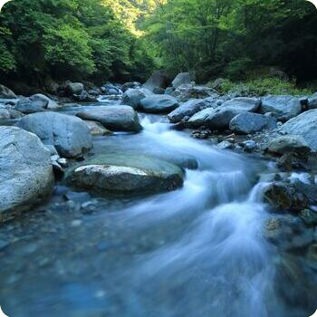
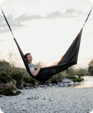

Find Your Adventure!
Embarking on a white water rafting expedition with SpillSplash Rafting, Co. is a personalized experience tailored to your preferences. Here are some essential factors to consider when selecting the perfect adventure for you:
- Group Size : Whether you're planning a solo adventure, a romantic getaway, a family outing, or a team-building excursion, we cater to groups of all sizes. Our experienced guides ensure that each member of your party receives the attention and support they need to make the most of their adventure.
- Experience Level : No previous white water rafting experience? No problem! Our tours are designed for adventurers of all skill levels, from beginners to seasoned pros. Our guides will provide the necessary instruction and guidance to ensure a safe and thrilling experience, regardless of your familiarity with rapids.
- Desired Duration : We offer a range of tour durations to accommodate your schedule and preferences. Whether you're seeking an adrenaline-pumping half-day adventure, a leisurely full-day excursion, an unforgettable weekend, or even a once in a lifetime full week experience, we have options to suit every adventurer's timetable.
Twin Snake River - A Perfect Introduction to White Water Rafting
Embark on an unforgettable journey down the serene yet thrilling waters of the Twin Snake River with SpillSplash Rafting, Co.'s guided full-day expedition. Designed for beginners seeking an accessible entry into white water rafting, this excursion promises an experience that blends excitement, natural beauty, and camaraderie.
Cascade Falls Expedition - Where Adventure Meets Nature's Beauty
Embark on an exhilarating journey down the Cascade Falls route with SpillSplash Rafting Co's guided adventure. This moderately challenging expedition promises a perfect balance of excitement and natural wonder, all while passing right by the breathtaking Cascade Falls. Experience the power and beauty of nature as you pass right by the awe-inspiring Cascade Falls. Marvel at the cascading water and feel the mist on your face, creating a truly unforgettable moment.
Crystal Rapids Excursion - The Ultimate White Water Odyssey
Embark on the adventure of a lifetime with SpillSplash Rafting, Co.'s premier week-long expedition, the Crystal Rapids Excursion. This extraordinary journey is tailored for the most avid adventurers, offering a thrilling 76-mile descent through challenging rapids and captivating landscapes. For those seeking the pinnacle of white water rafting experiences, the Crystal Rapids Excursion awaits. Book now and prepare for a week of heart-pounding adventure, breathtaking scenery, and unforgettable camaraderie.
| Adventure Name | Minimum Group Size | Duration | Experience Level | Price (per person) |
|---|---|---|---|---|
| Twin Snake River Swim | 6 | Half a day | Beginner | $50 |
| Sunset Serenade Paddle | 6 | Half a day | Beginner | $50 |
| Cascade Falls Adventure | 8 | Full Day | Moderate | $80 |
| Wildflower Creek Expedition | 8 | 3 days (Fri Sat Sun) | Moderate | $270 |
| Mystic Gorge Trek | 8 | 5 days (Wed-Sun) | Experienced | $475 |
| Crystal Rapids Excursion | 12 | 7 days | Experienced | $600 |
"An absolute blast! The Wildflower Creek Expedition was just the right level of excitement for our group. The guides were knowledgeable and made us feel completely at ease. Can't wait to join another adventure with SpillSplash!"
--Sarah T.
"The Sunset Serenade Paddle was the perfect way to unwind and connect with nature. The scenery was breathtaking, and the guides were fantastic. Highly recommend for a relaxing yet invigorating experience!"
--Michael R.
"The Crystal Rapids Excursion was an adventure like no other! The challenge was invigorating, and the beauty of the river was awe-inspiring. This trip created memories that will last a lifetime. Thanks, SpillSplash!"
--Emily L.
"The Mystic Gorge Trek pushed our limits in the best way possible. It was an incredible journey through stunning landscapes and exhilarating rapids. Our group came out feeling stronger and more connected. Can't wait for the next adventure!"
--James M.